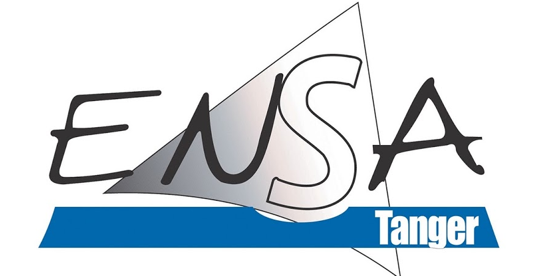

|
Université Abdelmalek Essaâdi Ecole Nationale des Sciences Appliquées Tanger |  |
Nom et Prénom :ABBADABDELOUAHED
Code Apogée :21010395
| Administration et programmation systèmes | |
| Administration systèmes | 15.74 / 20 |
| Programmation systèmes | 14.89 / 20 |
| Note Finale : | 15.31 / 20 |
| Bases de données avancées 1 | |
| Optimisation et Qualité de Base de données | 15.92 / 20 |
| Administration et Sécurité des Bases de données | 13.05 / 20 |
| Note Finale : | 14.48 / 20 |
| Langue & communication | |
| Espagnol 2 & Allemand | 18.59 / 20 |
| Anglais professionnel | 13.27 / 20 |
| Note Finale : | 15.93 / 20 |
| Modélisation orientée objet et IHM | |
| Modélisation orientée objet UML | 11.35 / 20 |
| IHM | 10.20 / 20 |
| Note Finale : | 10.77 / 20 |
| Programmation Orientée Objet & XML | |
| Programmation | 10.28 / 20 |
| XML | 17.63 / 20 |
| Note Finale : | 13.95 / 20 |
| Qualité & Approche Processus | |
| Assurance Qualité | 19.00 / 20 |
| Méthodes Agiles | 13.69 / 20 |
| Note Finale : | 16.34 / 20 |
| Moyenne Générale : | 14.46 / 20 |
Nom et Prénom :ABDELOUAHABSOUFIANE
Code Apogée :21010278
| Administration et programmation systèmes | |
| Administration systèmes | 14.53 / 20 |
| Programmation systèmes | 14.28 / 20 |
| Note Finale : | 14.40 / 20 |
| Bases de données avancées 1 | |
| Optimisation et Qualité de Base de données | 11.23 / 20 |
| Administration et Sécurité des Bases de données | 19.89 / 20 |
| Note Finale : | 15.56 / 20 |
| Langue & communication | |
| Espagnol 2 & Allemand | 10.09 / 20 |
| Anglais professionnel | 12.76 / 20 |
| Note Finale : | 11.43 / 20 |
| Modélisation orientée objet et IHM | |
| Modélisation orientée objet UML | 11.90 / 20 |
| IHM | 13.40 / 20 |
| Note Finale : | 12.65 / 20 |
| Programmation Orientée Objet & XML | |
| Programmation | 16.21 / 20 |
| XML | 16.77 / 20 |
| Note Finale : | 16.49 / 20 |
| Qualité & Approche Processus | |
| Assurance Qualité | 11.25 / 20 |
| Méthodes Agiles | 15.01 / 20 |
| Note Finale : | 13.13 / 20 |
| Moyenne Générale : | 13.94 / 20 |
Nom et Prénom :ABOU-EL KASEMKENZA
Code Apogée :21011326
| Administration et programmation systèmes | |
| Administration systèmes | 16.29 / 20 |
| Programmation systèmes | 13.94 / 20 |
| Note Finale : | 15.11 / 20 |
| Bases de données avancées 1 | |
| Optimisation et Qualité de Base de données | 11.68 / 20 |
| Administration et Sécurité des Bases de données | 12.26 / 20 |
| Note Finale : | 11.97 / 20 |
| Langue & communication | |
| Espagnol 2 & Allemand | 19.68 / 20 |
| Anglais professionnel | 17.04 / 20 |
| Note Finale : | 18.36 / 20 |
| Modélisation orientée objet et IHM | |
| Modélisation orientée objet UML | 13.13 / 20 |
| IHM | 15.86 / 20 |
| Note Finale : | 14.49 / 20 |
| Programmation Orientée Objet & XML | |
| Programmation | 16.91 / 20 |
| XML | 14.47 / 20 |
| Note Finale : | 15.69 / 20 |
| Qualité & Approche Processus | |
| Assurance Qualité | 15.42 / 20 |
| Méthodes Agiles | 13.53 / 20 |
| Note Finale : | 14.47 / 20 |
| Moyenne Générale : | 15.02 / 20 |
Nom et Prénom :AHMYTTOUAYA
Code Apogée :21010358
| Administration et programmation systèmes | |
| Administration systèmes | 11.16 / 20 |
| Programmation systèmes | 14.56 / 20 |
| Note Finale : | 12.86 / 20 |
| Bases de données avancées 1 | |
| Optimisation et Qualité de Base de données | 19.22 / 20 |
| Administration et Sécurité des Bases de données | 18.06 / 20 |
| Note Finale : | 18.64 / 20 |
| Langue & communication | |
| Espagnol 2 & Allemand | 17.80 / 20 |
| Anglais professionnel | 12.52 / 20 |
| Note Finale : | 15.16 / 20 |
| Modélisation orientée objet et IHM | |
| Modélisation orientée objet UML | 12.48 / 20 |
| IHM | 10.19 / 20 |
| Note Finale : | 11.34 / 20 |
| Programmation Orientée Objet & XML | |
| Programmation | 15.84 / 20 |
| XML | 19.75 / 20 |
| Note Finale : | 17.80 / 20 |
| Qualité & Approche Processus | |
| Assurance Qualité | 19.08 / 20 |
| Méthodes Agiles | 14.47 / 20 |
| Note Finale : | 16.77 / 20 |
| Moyenne Générale : | 15.43 / 20 |
Nom et Prénom :AIDOUNIBTISSAM
Code Apogée :21010266
| Administration et programmation systèmes | |
| Administration systèmes | 14.42 / 20 |
| Programmation systèmes | 14.27 / 20 |
| Note Finale : | 14.34 / 20 |
| Bases de données avancées 1 | |
| Optimisation et Qualité de Base de données | 12.37 / 20 |
| Administration et Sécurité des Bases de données | 18.82 / 20 |
| Note Finale : | 15.59 / 20 |
| Langue & communication | |
| Espagnol 2 & Allemand | 15.56 / 20 |
| Anglais professionnel | 10.13 / 20 |
| Note Finale : | 12.85 / 20 |
| Modélisation orientée objet et IHM | |
| Modélisation orientée objet UML | 15.98 / 20 |
| IHM | 19.86 / 20 |
| Note Finale : | 17.92 / 20 |
| Programmation Orientée Objet & XML | |
| Programmation | 18.35 / 20 |
| XML | 16.88 / 20 |
| Note Finale : | 17.61 / 20 |
| Qualité & Approche Processus | |
| Assurance Qualité | 10.84 / 20 |
| Méthodes Agiles | 16.14 / 20 |
| Note Finale : | 13.49 / 20 |
| Moyenne Générale : | 15.30 / 20 |
Nom et Prénom :AL AZAMITAREK
Code Apogée :20001758
| Administration et programmation systèmes | |
| Administration systèmes | 18.46 / 20 |
| Programmation systèmes | 17.70 / 20 |
| Note Finale : | 18.08 / 20 |
| Bases de données avancées 1 | |
| Optimisation et Qualité de Base de données | 17.76 / 20 |
| Administration et Sécurité des Bases de données | 11.66 / 20 |
| Note Finale : | 14.71 / 20 |
| Langue & communication | |
| Espagnol 2 & Allemand | 14.78 / 20 |
| Anglais professionnel | 16.53 / 20 |
| Note Finale : | 15.65 / 20 |
| Modélisation orientée objet et IHM | |
| Modélisation orientée objet UML | 13.56 / 20 |
| IHM | 12.06 / 20 |
| Note Finale : | 12.81 / 20 |
| Programmation Orientée Objet & XML | |
| Programmation | 10.96 / 20 |
| XML | 14.44 / 20 |
| Note Finale : | 12.70 / 20 |
| Qualité & Approche Processus | |
| Assurance Qualité | 19.88 / 20 |
| Méthodes Agiles | 18.82 / 20 |
| Note Finale : | 19.35 / 20 |
| Moyenne Générale : | 15.55 / 20 |
Nom et Prénom :ALLAMELARBI
Code Apogée :21010287
| Administration et programmation systèmes | |
| Administration systèmes | 18.01 / 20 |
| Programmation systèmes | 12.38 / 20 |
| Note Finale : | 15.20 / 20 |
| Bases de données avancées 1 | |
| Optimisation et Qualité de Base de données | 16.54 / 20 |
| Administration et Sécurité des Bases de données | 10.06 / 20 |
| Note Finale : | 13.30 / 20 |
| Langue & communication | |
| Espagnol 2 & Allemand | 17.54 / 20 |
| Anglais professionnel | 14.42 / 20 |
| Note Finale : | 15.98 / 20 |
| Modélisation orientée objet et IHM | |
| Modélisation orientée objet UML | 19.08 / 20 |
| IHM | 10.71 / 20 |
| Note Finale : | 14.89 / 20 |
| Programmation Orientée Objet & XML | |
| Programmation | 15.23 / 20 |
| XML | 18.94 / 20 |
| Note Finale : | 17.09 / 20 |
| Qualité & Approche Processus | |
| Assurance Qualité | 13.61 / 20 |
| Méthodes Agiles | 17.32 / 20 |
| Note Finale : | 15.46 / 20 |
| Moyenne Générale : | 15.32 / 20 |
Nom et Prénom :ARIBAYMANE
Code Apogée :21010482
| Administration et programmation systèmes | |
| Administration systèmes | 12.70 / 20 |
| Programmation systèmes | 12.16 / 20 |
| Note Finale : | 12.43 / 20 |
| Bases de données avancées 1 | |
| Optimisation et Qualité de Base de données | 13.28 / 20 |
| Administration et Sécurité des Bases de données | 15.51 / 20 |
| Note Finale : | 14.39 / 20 |
| Langue & communication | |
| Espagnol 2 & Allemand | 16.14 / 20 |
| Anglais professionnel | 18.61 / 20 |
| Note Finale : | 17.38 / 20 |
| Modélisation orientée objet et IHM | |
| Modélisation orientée objet UML | 19.15 / 20 |
| IHM | 15.65 / 20 |
| Note Finale : | 17.40 / 20 |
| Programmation Orientée Objet & XML | |
| Programmation | 13.27 / 20 |
| XML | 13.64 / 20 |
| Note Finale : | 13.46 / 20 |
| Qualité & Approche Processus | |
| Assurance Qualité | 15.66 / 20 |
| Méthodes Agiles | 10.45 / 20 |
| Note Finale : | 13.05 / 20 |
| Moyenne Générale : | 14.69 / 20 |
Nom et Prénom :AZZMANNORELIMANE
Code Apogée :21009157
| Administration et programmation systèmes | |
| Administration systèmes | 14.21 / 20 |
| Programmation systèmes | 18.03 / 20 |
| Note Finale : | 16.12 / 20 |
| Bases de données avancées 1 | |
| Optimisation et Qualité de Base de données | 16.46 / 20 |
| Administration et Sécurité des Bases de données | 13.61 / 20 |
| Note Finale : | 15.04 / 20 |
| Langue & communication | |
| Espagnol 2 & Allemand | 12.36 / 20 |
| Anglais professionnel | 16.20 / 20 |
| Note Finale : | 14.28 / 20 |
| Modélisation orientée objet et IHM | |
| Modélisation orientée objet UML | 14.18 / 20 |
| IHM | 15.53 / 20 |
| Note Finale : | 14.86 / 20 |
| Programmation Orientée Objet & XML | |
| Programmation | 11.95 / 20 |
| XML | 16.71 / 20 |
| Note Finale : | 14.33 / 20 |
| Qualité & Approche Processus | |
| Assurance Qualité | 19.84 / 20 |
| Méthodes Agiles | 15.65 / 20 |
| Note Finale : | 17.75 / 20 |
| Moyenne Générale : | 15.40 / 20 |
Nom et Prénom :AZZOUZCHAIMAE
Code Apogée :21010356
| Administration et programmation systèmes | |
| Administration systèmes | 13.98 / 20 |
| Programmation systèmes | 11.18 / 20 |
| Note Finale : | 12.58 / 20 |
| Bases de données avancées 1 | |
| Optimisation et Qualité de Base de données | 18.94 / 20 |
| Administration et Sécurité des Bases de données | 13.92 / 20 |
| Note Finale : | 16.43 / 20 |
| Langue & communication | |
| Espagnol 2 & Allemand | 18.50 / 20 |
| Anglais professionnel | 17.11 / 20 |
| Note Finale : | 17.80 / 20 |
| Modélisation orientée objet et IHM | |
| Modélisation orientée objet UML | 16.27 / 20 |
| IHM | 16.67 / 20 |
| Note Finale : | 16.47 / 20 |
| Programmation Orientée Objet & XML | |
| Programmation | 15.05 / 20 |
| XML | 17.51 / 20 |
| Note Finale : | 16.28 / 20 |
| Qualité & Approche Processus | |
| Assurance Qualité | 19.73 / 20 |
| Méthodes Agiles | 11.56 / 20 |
| Note Finale : | 15.64 / 20 |
| Moyenne Générale : | 15.87 / 20 |
Nom et Prénom :BEN IMRANAHLAM
Code Apogée :21010411
| Administration et programmation systèmes | |
| Administration systèmes | 14.05 / 20 |
| Programmation systèmes | 10.80 / 20 |
| Note Finale : | 12.43 / 20 |
| Bases de données avancées 1 | |
| Optimisation et Qualité de Base de données | 18.94 / 20 |
| Administration et Sécurité des Bases de données | 15.92 / 20 |
| Note Finale : | 17.43 / 20 |
| Langue & communication | |
| Espagnol 2 & Allemand | 15.84 / 20 |
| Anglais professionnel | 17.67 / 20 |
| Note Finale : | 16.75 / 20 |
| Modélisation orientée objet et IHM | |
| Modélisation orientée objet UML | 15.39 / 20 |
| IHM | 16.47 / 20 |
| Note Finale : | 15.93 / 20 |
| Programmation Orientée Objet & XML | |
| Programmation | 17.30 / 20 |
| XML | 13.11 / 20 |
| Note Finale : | 15.21 / 20 |
| Qualité & Approche Processus | |
| Assurance Qualité | 18.45 / 20 |
| Méthodes Agiles | 15.38 / 20 |
| Note Finale : | 16.91 / 20 |
| Moyenne Générale : | 15.78 / 20 |
Nom et Prénom :BENCHINEABDELILAH
Code Apogée :21010476
| Administration et programmation systèmes | |
| Administration systèmes | 10.46 / 20 |
| Programmation systèmes | 14.89 / 20 |
| Note Finale : | 12.68 / 20 |
| Bases de données avancées 1 | |
| Optimisation et Qualité de Base de données | 12.45 / 20 |
| Administration et Sécurité des Bases de données | 12.24 / 20 |
| Note Finale : | 12.34 / 20 |
| Langue & communication | |
| Espagnol 2 & Allemand | 17.47 / 20 |
| Anglais professionnel | 10.61 / 20 |
| Note Finale : | 14.04 / 20 |
| Modélisation orientée objet et IHM | |
| Modélisation orientée objet UML | 11.36 / 20 |
| IHM | 13.29 / 20 |
| Note Finale : | 12.32 / 20 |
| Programmation Orientée Objet & XML | |
| Programmation | 18.87 / 20 |
| XML | 12.48 / 20 |
| Note Finale : | 15.68 / 20 |
| Qualité & Approche Processus | |
| Assurance Qualité | 19.97 / 20 |
| Méthodes Agiles | 10.23 / 20 |
| Note Finale : | 15.10 / 20 |
| Moyenne Générale : | 13.69 / 20 |
Nom et Prénom :BENMGUIRIDAANAS
Code Apogée :22012817
| Administration et programmation systèmes | |
| Administration systèmes | 17.40 / 20 |
| Programmation systèmes | 15.09 / 20 |
| Note Finale : | 16.24 / 20 |
| Bases de données avancées 1 | |
| Optimisation et Qualité de Base de données | 19.03 / 20 |
| Administration et Sécurité des Bases de données | 15.29 / 20 |
| Note Finale : | 17.16 / 20 |
| Langue & communication | |
| Espagnol 2 & Allemand | 18.89 / 20 |
| Anglais professionnel | 11.36 / 20 |
| Note Finale : | 15.12 / 20 |
| Modélisation orientée objet et IHM | |
| Modélisation orientée objet UML | 18.61 / 20 |
| IHM | 16.44 / 20 |
| Note Finale : | 17.52 / 20 |
| Programmation Orientée Objet & XML | |
| Programmation | 10.45 / 20 |
| XML | 12.03 / 20 |
| Note Finale : | 11.24 / 20 |
| Qualité & Approche Processus | |
| Assurance Qualité | 15.15 / 20 |
| Méthodes Agiles | 18.65 / 20 |
| Note Finale : | 16.90 / 20 |
| Moyenne Générale : | 15.70 / 20 |
Nom et Prénom :BERKOUKTAMINE
Code Apogée :21009110
| Administration et programmation systèmes | |
| Administration systèmes | 19.90 / 20 |
| Programmation systèmes | 18.87 / 20 |
| Note Finale : | 19.38 / 20 |
| Bases de données avancées 1 | |
| Optimisation et Qualité de Base de données | 11.23 / 20 |
| Administration et Sécurité des Bases de données | 10.08 / 20 |
| Note Finale : | 10.65 / 20 |
| Langue & communication | |
| Espagnol 2 & Allemand | 13.39 / 20 |
| Anglais professionnel | 10.72 / 20 |
| Note Finale : | 12.05 / 20 |
| Modélisation orientée objet et IHM | |
| Modélisation orientée objet UML | 16.05 / 20 |
| IHM | 10.63 / 20 |
| Note Finale : | 13.34 / 20 |
| Programmation Orientée Objet & XML | |
| Programmation | 17.86 / 20 |
| XML | 15.51 / 20 |
| Note Finale : | 16.68 / 20 |
| Qualité & Approche Processus | |
| Assurance Qualité | 10.93 / 20 |
| Méthodes Agiles | 12.67 / 20 |
| Note Finale : | 11.80 / 20 |
| Moyenne Générale : | 13.98 / 20 |
Nom et Prénom :BIGAGANEABDELLAH
Code Apogée :21011779
| Administration et programmation systèmes | |
| Administration systèmes | 19.92 / 20 |
| Programmation systèmes | 18.30 / 20 |
| Note Finale : | 19.11 / 20 |
| Bases de données avancées 1 | |
| Optimisation et Qualité de Base de données | 18.82 / 20 |
| Administration et Sécurité des Bases de données | 11.47 / 20 |
| Note Finale : | 15.14 / 20 |
| Langue & communication | |
| Espagnol 2 & Allemand | 19.88 / 20 |
| Anglais professionnel | 15.91 / 20 |
| Note Finale : | 17.89 / 20 |
| Modélisation orientée objet et IHM | |
| Modélisation orientée objet UML | 17.80 / 20 |
| IHM | 12.38 / 20 |
| Note Finale : | 15.09 / 20 |
| Programmation Orientée Objet & XML | |
| Programmation | 19.36 / 20 |
| XML | 17.45 / 20 |
| Note Finale : | 18.41 / 20 |
| Qualité & Approche Processus | |
| Assurance Qualité | 14.27 / 20 |
| Méthodes Agiles | 14.71 / 20 |
| Note Finale : | 14.49 / 20 |
| Moyenne Générale : | 16.69 / 20 |
Nom et Prénom :BOUHNINESAFAA
Code Apogée :20011005
| Administration et programmation systèmes | |
| Administration systèmes | 19.23 / 20 |
| Programmation systèmes | 16.05 / 20 |
| Note Finale : | 17.64 / 20 |
| Bases de données avancées 1 | |
| Optimisation et Qualité de Base de données | 12.53 / 20 |
| Administration et Sécurité des Bases de données | 19.21 / 20 |
| Note Finale : | 15.87 / 20 |
| Langue & communication | |
| Espagnol 2 & Allemand | 12.76 / 20 |
| Anglais professionnel | 11.71 / 20 |
| Note Finale : | 12.23 / 20 |
| Modélisation orientée objet et IHM | |
| Modélisation orientée objet UML | 16.83 / 20 |
| IHM | 11.75 / 20 |
| Note Finale : | 14.29 / 20 |
| Programmation Orientée Objet & XML | |
| Programmation | 12.37 / 20 |
| XML | 12.04 / 20 |
| Note Finale : | 12.20 / 20 |
| Qualité & Approche Processus | |
| Assurance Qualité | 11.66 / 20 |
| Méthodes Agiles | 13.03 / 20 |
| Note Finale : | 12.34 / 20 |
| Moyenne Générale : | 14.09 / 20 |
Nom et Prénom :BOUKERMOHAMMED
Code Apogée :21002603
| Administration et programmation systèmes | |
| Administration systèmes | 12.14 / 20 |
| Programmation systèmes | 17.35 / 20 |
| Note Finale : | 14.74 / 20 |
| Bases de données avancées 1 | |
| Optimisation et Qualité de Base de données | 18.28 / 20 |
| Administration et Sécurité des Bases de données | 11.00 / 20 |
| Note Finale : | 14.64 / 20 |
| Langue & communication | |
| Espagnol 2 & Allemand | 15.52 / 20 |
| Anglais professionnel | 19.32 / 20 |
| Note Finale : | 17.42 / 20 |
| Modélisation orientée objet et IHM | |
| Modélisation orientée objet UML | 16.25 / 20 |
| IHM | 16.62 / 20 |
| Note Finale : | 16.43 / 20 |
| Programmation Orientée Objet & XML | |
| Programmation | 16.97 / 20 |
| XML | 19.70 / 20 |
| Note Finale : | 18.34 / 20 |
| Qualité & Approche Processus | |
| Assurance Qualité | 15.55 / 20 |
| Méthodes Agiles | 17.21 / 20 |
| Note Finale : | 16.38 / 20 |
| Moyenne Générale : | 16.32 / 20 |
Nom et Prénom :BOULERBAHYASSER
Code Apogée :21010261
| Administration et programmation systèmes | |
| Administration systèmes | 17.43 / 20 |
| Programmation systèmes | 15.04 / 20 |
| Note Finale : | 16.23 / 20 |
| Bases de données avancées 1 | |
| Optimisation et Qualité de Base de données | 18.85 / 20 |
| Administration et Sécurité des Bases de données | 13.76 / 20 |
| Note Finale : | 16.30 / 20 |
| Langue & communication | |
| Espagnol 2 & Allemand | 13.72 / 20 |
| Anglais professionnel | 16.30 / 20 |
| Note Finale : | 15.01 / 20 |
| Modélisation orientée objet et IHM | |
| Modélisation orientée objet UML | 16.90 / 20 |
| IHM | 11.15 / 20 |
| Note Finale : | 14.02 / 20 |
| Programmation Orientée Objet & XML | |
| Programmation | 16.51 / 20 |
| XML | 15.40 / 20 |
| Note Finale : | 15.96 / 20 |
| Qualité & Approche Processus | |
| Assurance Qualité | 15.38 / 20 |
| Méthodes Agiles | 14.48 / 20 |
| Note Finale : | 14.93 / 20 |
| Moyenne Générale : | 15.41 / 20 |
Nom et Prénom :BOUNOUARMOHAMMED
Code Apogée :21011724
| Administration et programmation systèmes | |
| Administration systèmes | 12.57 / 20 |
| Programmation systèmes | 18.28 / 20 |
| Note Finale : | 15.43 / 20 |
| Bases de données avancées 1 | |
| Optimisation et Qualité de Base de données | 13.00 / 20 |
| Administration et Sécurité des Bases de données | 13.26 / 20 |
| Note Finale : | 13.13 / 20 |
| Langue & communication | |
| Espagnol 2 & Allemand | 15.99 / 20 |
| Anglais professionnel | 17.69 / 20 |
| Note Finale : | 16.84 / 20 |
| Modélisation orientée objet et IHM | |
| Modélisation orientée objet UML | 19.57 / 20 |
| IHM | 11.59 / 20 |
| Note Finale : | 15.58 / 20 |
| Programmation Orientée Objet & XML | |
| Programmation | 18.34 / 20 |
| XML | 13.02 / 20 |
| Note Finale : | 15.68 / 20 |
| Qualité & Approche Processus | |
| Assurance Qualité | 13.73 / 20 |
| Méthodes Agiles | 15.16 / 20 |
| Note Finale : | 14.45 / 20 |
| Moyenne Générale : | 15.19 / 20 |
Nom et Prénom :BOUSSAIDMERYEME
Code Apogée :21009025
| Administration et programmation systèmes | |
| Administration systèmes | 15.73 / 20 |
| Programmation systèmes | 13.31 / 20 |
| Note Finale : | 14.52 / 20 |
| Bases de données avancées 1 | |
| Optimisation et Qualité de Base de données | 12.11 / 20 |
| Administration et Sécurité des Bases de données | 14.56 / 20 |
| Note Finale : | 13.34 / 20 |
| Langue & communication | |
| Espagnol 2 & Allemand | 14.72 / 20 |
| Anglais professionnel | 15.36 / 20 |
| Note Finale : | 15.04 / 20 |
| Modélisation orientée objet et IHM | |
| Modélisation orientée objet UML | 18.67 / 20 |
| IHM | 12.42 / 20 |
| Note Finale : | 15.54 / 20 |
| Programmation Orientée Objet & XML | |
| Programmation | 14.25 / 20 |
| XML | 15.47 / 20 |
| Note Finale : | 14.86 / 20 |
| Qualité & Approche Processus | |
| Assurance Qualité | 14.79 / 20 |
| Méthodes Agiles | 10.22 / 20 |
| Note Finale : | 12.50 / 20 |
| Moyenne Générale : | 14.30 / 20 |
Nom et Prénom :CHAIBERRASSOUHAIL
Code Apogée :21010326
| Administration et programmation systèmes | |
| Administration systèmes | 17.73 / 20 |
| Programmation systèmes | 17.40 / 20 |
| Note Finale : | 17.56 / 20 |
| Bases de données avancées 1 | |
| Optimisation et Qualité de Base de données | 14.95 / 20 |
| Administration et Sécurité des Bases de données | 14.72 / 20 |
| Note Finale : | 14.84 / 20 |
| Langue & communication | |
| Espagnol 2 & Allemand | 19.63 / 20 |
| Anglais professionnel | 19.96 / 20 |
| Note Finale : | 19.80 / 20 |
| Modélisation orientée objet et IHM | |
| Modélisation orientée objet UML | 19.61 / 20 |
| IHM | 12.03 / 20 |
| Note Finale : | 15.82 / 20 |
| Programmation Orientée Objet & XML | |
| Programmation | 14.94 / 20 |
| XML | 19.71 / 20 |
| Note Finale : | 17.32 / 20 |
| Qualité & Approche Processus | |
| Assurance Qualité | 17.05 / 20 |
| Méthodes Agiles | 11.10 / 20 |
| Note Finale : | 14.07 / 20 |
| Moyenne Générale : | 16.57 / 20 |
Nom et Prénom :CHERKIHOUSSAM
Code Apogée :21010299
| Administration et programmation systèmes | |
| Administration systèmes | 19.82 / 20 |
| Programmation systèmes | 16.19 / 20 |
| Note Finale : | 18.00 / 20 |
| Bases de données avancées 1 | |
| Optimisation et Qualité de Base de données | 16.21 / 20 |
| Administration et Sécurité des Bases de données | 12.75 / 20 |
| Note Finale : | 14.48 / 20 |
| Langue & communication | |
| Espagnol 2 & Allemand | 16.75 / 20 |
| Anglais professionnel | 13.61 / 20 |
| Note Finale : | 15.18 / 20 |
| Modélisation orientée objet et IHM | |
| Modélisation orientée objet UML | 11.59 / 20 |
| IHM | 19.79 / 20 |
| Note Finale : | 15.69 / 20 |
| Programmation Orientée Objet & XML | |
| Programmation | 17.82 / 20 |
| XML | 19.57 / 20 |
| Note Finale : | 18.70 / 20 |
| Qualité & Approche Processus | |
| Assurance Qualité | 10.47 / 20 |
| Méthodes Agiles | 13.18 / 20 |
| Note Finale : | 11.82 / 20 |
| Moyenne Générale : | 15.65 / 20 |
Nom et Prénom :DAHBIMOAD
Code Apogée :21009475
| Administration et programmation systèmes | |
| Administration systèmes | 18.49 / 20 |
| Programmation systèmes | 12.57 / 20 |
| Note Finale : | 15.53 / 20 |
| Bases de données avancées 1 | |
| Optimisation et Qualité de Base de données | 18.16 / 20 |
| Administration et Sécurité des Bases de données | 14.55 / 20 |
| Note Finale : | 16.36 / 20 |
| Langue & communication | |
| Espagnol 2 & Allemand | 11.23 / 20 |
| Anglais professionnel | 17.40 / 20 |
| Note Finale : | 14.31 / 20 |
| Modélisation orientée objet et IHM | |
| Modélisation orientée objet UML | 15.86 / 20 |
| IHM | 17.87 / 20 |
| Note Finale : | 16.86 / 20 |
| Programmation Orientée Objet & XML | |
| Programmation | 19.54 / 20 |
| XML | 16.90 / 20 |
| Note Finale : | 18.22 / 20 |
| Qualité & Approche Processus | |
| Assurance Qualité | 19.25 / 20 |
| Méthodes Agiles | 11.57 / 20 |
| Note Finale : | 15.41 / 20 |
| Moyenne Générale : | 16.11 / 20 |
Nom et Prénom :ECHCHRIKIIMAD
Code Apogée :21010439
| Administration et programmation systèmes | |
| Administration systèmes | 17.26 / 20 |
| Programmation systèmes | 18.00 / 20 |
| Note Finale : | 17.63 / 20 |
| Bases de données avancées 1 | |
| Optimisation et Qualité de Base de données | 15.68 / 20 |
| Administration et Sécurité des Bases de données | 14.74 / 20 |
| Note Finale : | 15.21 / 20 |
| Langue & communication | |
| Espagnol 2 & Allemand | 17.69 / 20 |
| Anglais professionnel | 17.73 / 20 |
| Note Finale : | 17.71 / 20 |
| Modélisation orientée objet et IHM | |
| Modélisation orientée objet UML | 14.64 / 20 |
| IHM | 11.99 / 20 |
| Note Finale : | 13.31 / 20 |
| Programmation Orientée Objet & XML | |
| Programmation | 12.50 / 20 |
| XML | 14.34 / 20 |
| Note Finale : | 13.42 / 20 |
| Qualité & Approche Processus | |
| Assurance Qualité | 11.87 / 20 |
| Méthodes Agiles | 17.20 / 20 |
| Note Finale : | 14.54 / 20 |
| Moyenne Générale : | 15.30 / 20 |
Nom et Prénom :EL ADNANIEL MEHDI
Code Apogée :21010403
| Administration et programmation systèmes | |
| Administration systèmes | 17.83 / 20 |
| Programmation systèmes | 10.12 / 20 |
| Note Finale : | 13.97 / 20 |
| Bases de données avancées 1 | |
| Optimisation et Qualité de Base de données | 16.28 / 20 |
| Administration et Sécurité des Bases de données | 14.01 / 20 |
| Note Finale : | 15.14 / 20 |
| Langue & communication | |
| Espagnol 2 & Allemand | 19.13 / 20 |
| Anglais professionnel | 13.87 / 20 |
| Note Finale : | 16.50 / 20 |
| Modélisation orientée objet et IHM | |
| Modélisation orientée objet UML | 17.85 / 20 |
| IHM | 11.51 / 20 |
| Note Finale : | 14.68 / 20 |
| Programmation Orientée Objet & XML | |
| Programmation | 15.33 / 20 |
| XML | 12.83 / 20 |
| Note Finale : | 14.08 / 20 |
| Qualité & Approche Processus | |
| Assurance Qualité | 12.21 / 20 |
| Méthodes Agiles | 15.87 / 20 |
| Note Finale : | 14.04 / 20 |
| Moyenne Générale : | 14.73 / 20 |
Nom et Prénom :EL AIDI IDRISSIACHRAF
Code Apogée :21010379
| Administration et programmation systèmes | |
| Administration systèmes | 15.20 / 20 |
| Programmation systèmes | 18.71 / 20 |
| Note Finale : | 16.95 / 20 |
| Bases de données avancées 1 | |
| Optimisation et Qualité de Base de données | 11.48 / 20 |
| Administration et Sécurité des Bases de données | 16.13 / 20 |
| Note Finale : | 13.80 / 20 |
| Langue & communication | |
| Espagnol 2 & Allemand | 13.39 / 20 |
| Anglais professionnel | 11.56 / 20 |
| Note Finale : | 12.47 / 20 |
| Modélisation orientée objet et IHM | |
| Modélisation orientée objet UML | 10.20 / 20 |
| IHM | 14.05 / 20 |
| Note Finale : | 12.12 / 20 |
| Programmation Orientée Objet & XML | |
| Programmation | 15.58 / 20 |
| XML | 19.67 / 20 |
| Note Finale : | 17.62 / 20 |
| Qualité & Approche Processus | |
| Assurance Qualité | 11.75 / 20 |
| Méthodes Agiles | 17.72 / 20 |
| Note Finale : | 14.73 / 20 |
| Moyenne Générale : | 14.62 / 20 |
Nom et Prénom :EL AOUADOUAAIL
Code Apogée :21010272
| Administration et programmation systèmes | |
| Administration systèmes | 13.65 / 20 |
| Programmation systèmes | 16.19 / 20 |
| Note Finale : | 14.92 / 20 |
| Bases de données avancées 1 | |
| Optimisation et Qualité de Base de données | 16.33 / 20 |
| Administration et Sécurité des Bases de données | 12.15 / 20 |
| Note Finale : | 14.24 / 20 |
| Langue & communication | |
| Espagnol 2 & Allemand | 15.72 / 20 |
| Anglais professionnel | 16.84 / 20 |
| Note Finale : | 16.28 / 20 |
| Modélisation orientée objet et IHM | |
| Modélisation orientée objet UML | 19.37 / 20 |
| IHM | 11.69 / 20 |
| Note Finale : | 15.53 / 20 |
| Programmation Orientée Objet & XML | |
| Programmation | 19.98 / 20 |
| XML | 19.16 / 20 |
| Note Finale : | 19.57 / 20 |
| Qualité & Approche Processus | |
| Assurance Qualité | 15.07 / 20 |
| Méthodes Agiles | 13.14 / 20 |
| Note Finale : | 14.11 / 20 |
| Moyenne Générale : | 15.77 / 20 |
Nom et Prénom :EL BAKALIMALAK
Code Apogée :21010324
| Administration et programmation systèmes | |
| Administration systèmes | 15.37 / 20 |
| Programmation systèmes | 16.39 / 20 |
| Note Finale : | 15.88 / 20 |
| Bases de données avancées 1 | |
| Optimisation et Qualité de Base de données | 16.12 / 20 |
| Administration et Sécurité des Bases de données | 14.72 / 20 |
| Note Finale : | 15.42 / 20 |
| Langue & communication | |
| Espagnol 2 & Allemand | 14.63 / 20 |
| Anglais professionnel | 16.86 / 20 |
| Note Finale : | 15.74 / 20 |
| Modélisation orientée objet et IHM | |
| Modélisation orientée objet UML | 11.84 / 20 |
| IHM | 17.26 / 20 |
| Note Finale : | 14.55 / 20 |
| Programmation Orientée Objet & XML | |
| Programmation | 17.80 / 20 |
| XML | 11.41 / 20 |
| Note Finale : | 14.61 / 20 |
| Qualité & Approche Processus | |
| Assurance Qualité | 13.58 / 20 |
| Méthodes Agiles | 16.31 / 20 |
| Note Finale : | 14.95 / 20 |
| Moyenne Générale : | 15.19 / 20 |
Nom et Prénom :EL FERCHOUNISOUKAYNA
Code Apogée :20007042
| Administration et programmation systèmes | |
| Administration systèmes | 12.44 / 20 |
| Programmation systèmes | 13.21 / 20 |
| Note Finale : | 12.82 / 20 |
| Bases de données avancées 1 | |
| Optimisation et Qualité de Base de données | 13.11 / 20 |
| Administration et Sécurité des Bases de données | 10.22 / 20 |
| Note Finale : | 11.66 / 20 |
| Langue & communication | |
| Espagnol 2 & Allemand | 19.14 / 20 |
| Anglais professionnel | 17.15 / 20 |
| Note Finale : | 18.14 / 20 |
| Modélisation orientée objet et IHM | |
| Modélisation orientée objet UML | 11.00 / 20 |
| IHM | 17.45 / 20 |
| Note Finale : | 14.22 / 20 |
| Programmation Orientée Objet & XML | |
| Programmation | 18.51 / 20 |
| XML | 10.26 / 20 |
| Note Finale : | 14.38 / 20 |
| Qualité & Approche Processus | |
| Assurance Qualité | 18.44 / 20 |
| Méthodes Agiles | 14.89 / 20 |
| Note Finale : | 16.66 / 20 |
| Moyenne Générale : | 14.65 / 20 |
Nom et Prénom :EL GARTIYASSINE
Code Apogée :21010274
| Administration et programmation systèmes | |
| Administration systèmes | 16.74 / 20 |
| Programmation systèmes | 11.63 / 20 |
| Note Finale : | 14.18 / 20 |
| Bases de données avancées 1 | |
| Optimisation et Qualité de Base de données | 19.25 / 20 |
| Administration et Sécurité des Bases de données | 18.04 / 20 |
| Note Finale : | 18.64 / 20 |
| Langue & communication | |
| Espagnol 2 & Allemand | 18.97 / 20 |
| Anglais professionnel | 18.65 / 20 |
| Note Finale : | 18.81 / 20 |
| Modélisation orientée objet et IHM | |
| Modélisation orientée objet UML | 12.49 / 20 |
| IHM | 10.53 / 20 |
| Note Finale : | 11.51 / 20 |
| Programmation Orientée Objet & XML | |
| Programmation | 11.56 / 20 |
| XML | 13.46 / 20 |
| Note Finale : | 12.51 / 20 |
| Qualité & Approche Processus | |
| Assurance Qualité | 13.83 / 20 |
| Méthodes Agiles | 19.59 / 20 |
| Note Finale : | 16.71 / 20 |
| Moyenne Générale : | 15.39 / 20 |
Nom et Prénom :EL GHAZISILIA
Code Apogée :21010319
| Administration et programmation systèmes | |
| Administration systèmes | 19.29 / 20 |
| Programmation systèmes | 11.75 / 20 |
| Note Finale : | 15.52 / 20 |
| Bases de données avancées 1 | |
| Optimisation et Qualité de Base de données | 11.65 / 20 |
| Administration et Sécurité des Bases de données | 15.68 / 20 |
| Note Finale : | 13.66 / 20 |
| Langue & communication | |
| Espagnol 2 & Allemand | 15.11 / 20 |
| Anglais professionnel | 14.60 / 20 |
| Note Finale : | 14.86 / 20 |
| Modélisation orientée objet et IHM | |
| Modélisation orientée objet UML | 15.36 / 20 |
| IHM | 19.90 / 20 |
| Note Finale : | 17.63 / 20 |
| Programmation Orientée Objet & XML | |
| Programmation | 17.54 / 20 |
| XML | 11.08 / 20 |
| Note Finale : | 14.31 / 20 |
| Qualité & Approche Processus | |
| Assurance Qualité | 16.66 / 20 |
| Méthodes Agiles | 10.07 / 20 |
| Note Finale : | 13.37 / 20 |
| Moyenne Générale : | 14.89 / 20 |
Nom et Prénom :EL HARIRIKENZA
Code Apogée :19006658
| Administration et programmation systèmes | |
| Administration systèmes | 18.89 / 20 |
| Programmation systèmes | 14.08 / 20 |
| Note Finale : | 16.48 / 20 |
| Bases de données avancées 1 | |
| Optimisation et Qualité de Base de données | 11.80 / 20 |
| Administration et Sécurité des Bases de données | 11.69 / 20 |
| Note Finale : | 11.74 / 20 |
| Langue & communication | |
| Espagnol 2 & Allemand | 18.94 / 20 |
| Anglais professionnel | 16.84 / 20 |
| Note Finale : | 17.89 / 20 |
| Modélisation orientée objet et IHM | |
| Modélisation orientée objet UML | 19.58 / 20 |
| IHM | 17.57 / 20 |
| Note Finale : | 18.57 / 20 |
| Programmation Orientée Objet & XML | |
| Programmation | 10.83 / 20 |
| XML | 15.96 / 20 |
| Note Finale : | 13.39 / 20 |
| Qualité & Approche Processus | |
| Assurance Qualité | 16.34 / 20 |
| Méthodes Agiles | 15.44 / 20 |
| Note Finale : | 15.89 / 20 |
| Moyenne Générale : | 15.66 / 20 |
Nom et Prénom :EL HARRAKMEHDI
Code Apogée :21010322
| Administration et programmation systèmes | |
| Administration systèmes | 17.59 / 20 |
| Programmation systèmes | 18.11 / 20 |
| Note Finale : | 17.85 / 20 |
| Bases de données avancées 1 | |
| Optimisation et Qualité de Base de données | 12.43 / 20 |
| Administration et Sécurité des Bases de données | 10.23 / 20 |
| Note Finale : | 11.33 / 20 |
| Langue & communication | |
| Espagnol 2 & Allemand | 12.92 / 20 |
| Anglais professionnel | 19.09 / 20 |
| Note Finale : | 16.00 / 20 |
| Modélisation orientée objet et IHM | |
| Modélisation orientée objet UML | 15.68 / 20 |
| IHM | 19.88 / 20 |
| Note Finale : | 17.78 / 20 |
| Programmation Orientée Objet & XML | |
| Programmation | 12.52 / 20 |
| XML | 18.81 / 20 |
| Note Finale : | 15.66 / 20 |
| Qualité & Approche Processus | |
| Assurance Qualité | 15.42 / 20 |
| Méthodes Agiles | 15.01 / 20 |
| Note Finale : | 15.21 / 20 |
| Moyenne Générale : | 15.64 / 20 |
Nom et Prénom :EL HLLAFIBASMA
Code Apogée :22012491
| Administration et programmation systèmes | |
| Administration systèmes | 13.35 / 20 |
| Programmation systèmes | 18.61 / 20 |
| Note Finale : | 15.98 / 20 |
| Bases de données avancées 1 | |
| Optimisation et Qualité de Base de données | 14.28 / 20 |
| Administration et Sécurité des Bases de données | 12.75 / 20 |
| Note Finale : | 13.52 / 20 |
| Langue & communication | |
| Espagnol 2 & Allemand | 19.24 / 20 |
| Anglais professionnel | 14.31 / 20 |
| Note Finale : | 16.77 / 20 |
| Modélisation orientée objet et IHM | |
| Modélisation orientée objet UML | 12.82 / 20 |
| IHM | 13.18 / 20 |
| Note Finale : | 13.00 / 20 |
| Programmation Orientée Objet & XML | |
| Programmation | 17.73 / 20 |
| XML | 13.24 / 20 |
| Note Finale : | 15.48 / 20 |
| Qualité & Approche Processus | |
| Assurance Qualité | 15.30 / 20 |
| Méthodes Agiles | 11.50 / 20 |
| Note Finale : | 13.40 / 20 |
| Moyenne Générale : | 14.69 / 20 |
Nom et Prénom :EL M RABETSAIDA
Code Apogée :21010441
| Administration et programmation systèmes | |
| Administration systèmes | 16.18 / 20 |
| Programmation systèmes | 12.45 / 20 |
| Note Finale : | 14.31 / 20 |
| Bases de données avancées 1 | |
| Optimisation et Qualité de Base de données | 17.04 / 20 |
| Administration et Sécurité des Bases de données | 19.85 / 20 |
| Note Finale : | 18.45 / 20 |
| Langue & communication | |
| Espagnol 2 & Allemand | 14.86 / 20 |
| Anglais professionnel | 17.52 / 20 |
| Note Finale : | 16.19 / 20 |
| Modélisation orientée objet et IHM | |
| Modélisation orientée objet UML | 17.47 / 20 |
| IHM | 14.77 / 20 |
| Note Finale : | 16.12 / 20 |
| Programmation Orientée Objet & XML | |
| Programmation | 12.08 / 20 |
| XML | 19.20 / 20 |
| Note Finale : | 15.64 / 20 |
| Qualité & Approche Processus | |
| Assurance Qualité | 12.04 / 20 |
| Méthodes Agiles | 10.09 / 20 |
| Note Finale : | 11.06 / 20 |
| Moyenne Générale : | 15.30 / 20 |
Nom et Prénom :EL MATNIADAM
Code Apogée :21010423
| Administration et programmation systèmes | |
| Administration systèmes | 15.79 / 20 |
| Programmation systèmes | 14.19 / 20 |
| Note Finale : | 14.99 / 20 |
| Bases de données avancées 1 | |
| Optimisation et Qualité de Base de données | 13.68 / 20 |
| Administration et Sécurité des Bases de données | 16.15 / 20 |
| Note Finale : | 14.91 / 20 |
| Langue & communication | |
| Espagnol 2 & Allemand | 15.07 / 20 |
| Anglais professionnel | 14.55 / 20 |
| Note Finale : | 14.81 / 20 |
| Modélisation orientée objet et IHM | |
| Modélisation orientée objet UML | 15.70 / 20 |
| IHM | 14.11 / 20 |
| Note Finale : | 14.90 / 20 |
| Programmation Orientée Objet & XML | |
| Programmation | 16.82 / 20 |
| XML | 11.24 / 20 |
| Note Finale : | 14.03 / 20 |
| Qualité & Approche Processus | |
| Assurance Qualité | 19.41 / 20 |
| Méthodes Agiles | 19.33 / 20 |
| Note Finale : | 19.37 / 20 |
| Moyenne Générale : | 15.50 / 20 |
Nom et Prénom :EL OUAHABIANASS
Code Apogée :20007896
| Administration et programmation systèmes | |
| Administration systèmes | 12.63 / 20 |
| Programmation systèmes | 15.08 / 20 |
| Note Finale : | 13.86 / 20 |
| Bases de données avancées 1 | |
| Optimisation et Qualité de Base de données | 14.25 / 20 |
| Administration et Sécurité des Bases de données | 15.39 / 20 |
| Note Finale : | 14.82 / 20 |
| Langue & communication | |
| Espagnol 2 & Allemand | 10.52 / 20 |
| Anglais professionnel | 15.86 / 20 |
| Note Finale : | 13.19 / 20 |
| Modélisation orientée objet et IHM | |
| Modélisation orientée objet UML | 17.74 / 20 |
| IHM | 17.67 / 20 |
| Note Finale : | 17.70 / 20 |
| Programmation Orientée Objet & XML | |
| Programmation | 13.45 / 20 |
| XML | 11.95 / 20 |
| Note Finale : | 12.70 / 20 |
| Qualité & Approche Processus | |
| Assurance Qualité | 12.41 / 20 |
| Méthodes Agiles | 16.32 / 20 |
| Note Finale : | 14.37 / 20 |
| Moyenne Générale : | 14.44 / 20 |
Nom et Prénom :EL YAZGHIMARYEM
Code Apogée :17004026
| Administration et programmation systèmes | |
| Administration systèmes | 18.41 / 20 |
| Programmation systèmes | 17.70 / 20 |
| Note Finale : | 18.05 / 20 |
| Bases de données avancées 1 | |
| Optimisation et Qualité de Base de données | 12.27 / 20 |
| Administration et Sécurité des Bases de données | 16.69 / 20 |
| Note Finale : | 14.48 / 20 |
| Langue & communication | |
| Espagnol 2 & Allemand | 18.63 / 20 |
| Anglais professionnel | 10.23 / 20 |
| Note Finale : | 14.43 / 20 |
| Modélisation orientée objet et IHM | |
| Modélisation orientée objet UML | 11.09 / 20 |
| IHM | 16.39 / 20 |
| Note Finale : | 13.74 / 20 |
| Programmation Orientée Objet & XML | |
| Programmation | 17.72 / 20 |
| XML | 10.68 / 20 |
| Note Finale : | 14.20 / 20 |
| Qualité & Approche Processus | |
| Assurance Qualité | 10.23 / 20 |
| Méthodes Agiles | 17.33 / 20 |
| Note Finale : | 13.78 / 20 |
| Moyenne Générale : | 14.78 / 20 |
Nom et Prénom :EL- OTMANISARA
Code Apogée :21011787
| Administration et programmation systèmes | |
| Administration systèmes | 14.88 / 20 |
| Programmation systèmes | 11.04 / 20 |
| Note Finale : | 12.96 / 20 |
| Bases de données avancées 1 | |
| Optimisation et Qualité de Base de données | 16.28 / 20 |
| Administration et Sécurité des Bases de données | 15.84 / 20 |
| Note Finale : | 16.06 / 20 |
| Langue & communication | |
| Espagnol 2 & Allemand | 13.55 / 20 |
| Anglais professionnel | 13.36 / 20 |
| Note Finale : | 13.46 / 20 |
| Modélisation orientée objet et IHM | |
| Modélisation orientée objet UML | 16.12 / 20 |
| IHM | 10.19 / 20 |
| Note Finale : | 13.15 / 20 |
| Programmation Orientée Objet & XML | |
| Programmation | 13.03 / 20 |
| XML | 15.40 / 20 |
| Note Finale : | 14.21 / 20 |
| Qualité & Approche Processus | |
| Assurance Qualité | 12.51 / 20 |
| Méthodes Agiles | 19.33 / 20 |
| Note Finale : | 15.92 / 20 |
| Moyenne Générale : | 14.29 / 20 |
Nom et Prénom :EL-BATTEOUIOUSSAMA
Code Apogée :21010306
| Administration et programmation systèmes | |
| Administration systèmes | 18.77 / 20 |
| Programmation systèmes | 14.15 / 20 |
| Note Finale : | 16.46 / 20 |
| Bases de données avancées 1 | |
| Optimisation et Qualité de Base de données | 16.56 / 20 |
| Administration et Sécurité des Bases de données | 12.46 / 20 |
| Note Finale : | 14.51 / 20 |
| Langue & communication | |
| Espagnol 2 & Allemand | 17.96 / 20 |
| Anglais professionnel | 14.08 / 20 |
| Note Finale : | 16.02 / 20 |
| Modélisation orientée objet et IHM | |
| Modélisation orientée objet UML | 16.90 / 20 |
| IHM | 17.81 / 20 |
| Note Finale : | 17.35 / 20 |
| Programmation Orientée Objet & XML | |
| Programmation | 17.96 / 20 |
| XML | 13.45 / 20 |
| Note Finale : | 15.71 / 20 |
| Qualité & Approche Processus | |
| Assurance Qualité | 15.10 / 20 |
| Méthodes Agiles | 16.76 / 20 |
| Note Finale : | 15.93 / 20 |
| Moyenne Générale : | 16.00 / 20 |
Nom et Prénom :FAROUKZAKARIA
Code Apogée :19005680
| Administration et programmation systèmes | |
| Administration systèmes | 13.98 / 20 |
| Programmation systèmes | 12.82 / 20 |
| Note Finale : | 13.40 / 20 |
| Bases de données avancées 1 | |
| Optimisation et Qualité de Base de données | 19.69 / 20 |
| Administration et Sécurité des Bases de données | 15.13 / 20 |
| Note Finale : | 17.41 / 20 |
| Langue & communication | |
| Espagnol 2 & Allemand | 17.24 / 20 |
| Anglais professionnel | 17.30 / 20 |
| Note Finale : | 17.27 / 20 |
| Modélisation orientée objet et IHM | |
| Modélisation orientée objet UML | 15.79 / 20 |
| IHM | 14.65 / 20 |
| Note Finale : | 15.22 / 20 |
| Programmation Orientée Objet & XML | |
| Programmation | 14.08 / 20 |
| XML | 16.01 / 20 |
| Note Finale : | 15.04 / 20 |
| Qualité & Approche Processus | |
| Assurance Qualité | 10.57 / 20 |
| Méthodes Agiles | 15.11 / 20 |
| Note Finale : | 12.84 / 20 |
| Moyenne Générale : | 15.20 / 20 |
Nom et Prénom :HADADWAIL
Code Apogée :21010320
| Administration et programmation systèmes | |
| Administration systèmes | 13.17 / 20 |
| Programmation systèmes | 19.16 / 20 |
| Note Finale : | 16.16 / 20 |
| Bases de données avancées 1 | |
| Optimisation et Qualité de Base de données | 14.04 / 20 |
| Administration et Sécurité des Bases de données | 15.86 / 20 |
| Note Finale : | 14.95 / 20 |
| Langue & communication | |
| Espagnol 2 & Allemand | 19.62 / 20 |
| Anglais professionnel | 14.05 / 20 |
| Note Finale : | 16.84 / 20 |
| Modélisation orientée objet et IHM | |
| Modélisation orientée objet UML | 19.21 / 20 |
| IHM | 14.84 / 20 |
| Note Finale : | 17.02 / 20 |
| Programmation Orientée Objet & XML | |
| Programmation | 17.14 / 20 |
| XML | 10.29 / 20 |
| Note Finale : | 13.71 / 20 |
| Qualité & Approche Processus | |
| Assurance Qualité | 12.13 / 20 |
| Méthodes Agiles | 18.20 / 20 |
| Note Finale : | 15.16 / 20 |
| Moyenne Générale : | 15.64 / 20 |
Nom et Prénom :HAJOUZRIHAB
Code Apogée :21010359
| Administration et programmation systèmes | |
| Administration systèmes | 15.60 / 20 |
| Programmation systèmes | 16.74 / 20 |
| Note Finale : | 16.17 / 20 |
| Bases de données avancées 1 | |
| Optimisation et Qualité de Base de données | 13.45 / 20 |
| Administration et Sécurité des Bases de données | 12.03 / 20 |
| Note Finale : | 12.74 / 20 |
| Langue & communication | |
| Espagnol 2 & Allemand | 10.52 / 20 |
| Anglais professionnel | 14.25 / 20 |
| Note Finale : | 12.38 / 20 |
| Modélisation orientée objet et IHM | |
| Modélisation orientée objet UML | 15.73 / 20 |
| IHM | 19.74 / 20 |
| Note Finale : | 17.73 / 20 |
| Programmation Orientée Objet & XML | |
| Programmation | 18.93 / 20 |
| XML | 13.32 / 20 |
| Note Finale : | 16.12 / 20 |
| Qualité & Approche Processus | |
| Assurance Qualité | 14.33 / 20 |
| Méthodes Agiles | 19.63 / 20 |
| Note Finale : | 16.98 / 20 |
| Moyenne Générale : | 15.35 / 20 |
Nom et Prénom :HILALYANAS
Code Apogée :21010334
| Administration et programmation systèmes | |
| Administration systèmes | 13.25 / 20 |
| Programmation systèmes | 17.71 / 20 |
| Note Finale : | 15.48 / 20 |
| Bases de données avancées 1 | |
| Optimisation et Qualité de Base de données | 16.92 / 20 |
| Administration et Sécurité des Bases de données | 14.27 / 20 |
| Note Finale : | 15.60 / 20 |
| Langue & communication | |
| Espagnol 2 & Allemand | 12.49 / 20 |
| Anglais professionnel | 10.68 / 20 |
| Note Finale : | 11.59 / 20 |
| Modélisation orientée objet et IHM | |
| Modélisation orientée objet UML | 14.84 / 20 |
| IHM | 16.37 / 20 |
| Note Finale : | 15.61 / 20 |
| Programmation Orientée Objet & XML | |
| Programmation | 15.96 / 20 |
| XML | 19.51 / 20 |
| Note Finale : | 17.73 / 20 |
| Qualité & Approche Processus | |
| Assurance Qualité | 10.27 / 20 |
| Méthodes Agiles | 11.81 / 20 |
| Note Finale : | 11.04 / 20 |
| Moyenne Générale : | 14.51 / 20 |
Nom et Prénom :IKENHANAE
Code Apogée :21010011
| Administration et programmation systèmes | |
| Administration systèmes | 10.76 / 20 |
| Programmation systèmes | 14.29 / 20 |
| Note Finale : | 12.52 / 20 |
| Bases de données avancées 1 | |
| Optimisation et Qualité de Base de données | 19.03 / 20 |
| Administration et Sécurité des Bases de données | 13.13 / 20 |
| Note Finale : | 16.08 / 20 |
| Langue & communication | |
| Espagnol 2 & Allemand | 11.51 / 20 |
| Anglais professionnel | 12.47 / 20 |
| Note Finale : | 11.99 / 20 |
| Modélisation orientée objet et IHM | |
| Modélisation orientée objet UML | 19.11 / 20 |
| IHM | 13.88 / 20 |
| Note Finale : | 16.50 / 20 |
| Programmation Orientée Objet & XML | |
| Programmation | 15.18 / 20 |
| XML | 18.51 / 20 |
| Note Finale : | 16.84 / 20 |
| Qualité & Approche Processus | |
| Assurance Qualité | 15.63 / 20 |
| Méthodes Agiles | 18.42 / 20 |
| Note Finale : | 17.02 / 20 |
| Moyenne Générale : | 15.16 / 20 |
Nom et Prénom :JEBARI HASSANIABDELHAK
Code Apogée :21010368
| Administration et programmation systèmes | |
| Administration systèmes | 11.81 / 20 |
| Programmation systèmes | 16.87 / 20 |
| Note Finale : | 14.34 / 20 |
| Bases de données avancées 1 | |
| Optimisation et Qualité de Base de données | 12.76 / 20 |
| Administration et Sécurité des Bases de données | 13.69 / 20 |
| Note Finale : | 13.22 / 20 |
| Langue & communication | |
| Espagnol 2 & Allemand | 10.64 / 20 |
| Anglais professionnel | 11.89 / 20 |
| Note Finale : | 11.27 / 20 |
| Modélisation orientée objet et IHM | |
| Modélisation orientée objet UML | 18.76 / 20 |
| IHM | 18.83 / 20 |
| Note Finale : | 18.80 / 20 |
| Programmation Orientée Objet & XML | |
| Programmation | 13.02 / 20 |
| XML | 16.62 / 20 |
| Note Finale : | 14.82 / 20 |
| Qualité & Approche Processus | |
| Assurance Qualité | 14.98 / 20 |
| Méthodes Agiles | 18.20 / 20 |
| Note Finale : | 16.59 / 20 |
| Moyenne Générale : | 14.84 / 20 |
Nom et Prénom :KABBOURWISSAL
Code Apogée :20009973
| Administration et programmation systèmes | |
| Administration systèmes | 18.93 / 20 |
| Programmation systèmes | 10.49 / 20 |
| Note Finale : | 14.71 / 20 |
| Bases de données avancées 1 | |
| Optimisation et Qualité de Base de données | 18.92 / 20 |
| Administration et Sécurité des Bases de données | 11.65 / 20 |
| Note Finale : | 15.29 / 20 |
| Langue & communication | |
| Espagnol 2 & Allemand | 13.45 / 20 |
| Anglais professionnel | 18.89 / 20 |
| Note Finale : | 16.17 / 20 |
| Modélisation orientée objet et IHM | |
| Modélisation orientée objet UML | 18.82 / 20 |
| IHM | 12.41 / 20 |
| Note Finale : | 15.62 / 20 |
| Programmation Orientée Objet & XML | |
| Programmation | 18.06 / 20 |
| XML | 17.12 / 20 |
| Note Finale : | 17.59 / 20 |
| Qualité & Approche Processus | |
| Assurance Qualité | 17.79 / 20 |
| Méthodes Agiles | 13.73 / 20 |
| Note Finale : | 15.76 / 20 |
| Moyenne Générale : | 15.86 / 20 |
Nom et Prénom :KEROUAN SALAHSOUMAIA
Code Apogée :21010231
| Administration et programmation systèmes | |
| Administration systèmes | 12.63 / 20 |
| Programmation systèmes | 19.44 / 20 |
| Note Finale : | 16.04 / 20 |
| Bases de données avancées 1 | |
| Optimisation et Qualité de Base de données | 15.32 / 20 |
| Administration et Sécurité des Bases de données | 14.47 / 20 |
| Note Finale : | 14.89 / 20 |
| Langue & communication | |
| Espagnol 2 & Allemand | 13.82 / 20 |
| Anglais professionnel | 15.78 / 20 |
| Note Finale : | 14.80 / 20 |
| Modélisation orientée objet et IHM | |
| Modélisation orientée objet UML | 19.13 / 20 |
| IHM | 16.58 / 20 |
| Note Finale : | 17.85 / 20 |
| Programmation Orientée Objet & XML | |
| Programmation | 12.01 / 20 |
| XML | 16.90 / 20 |
| Note Finale : | 14.45 / 20 |
| Qualité & Approche Processus | |
| Assurance Qualité | 18.64 / 20 |
| Méthodes Agiles | 19.71 / 20 |
| Note Finale : | 19.18 / 20 |
| Moyenne Générale : | 16.20 / 20 |
Nom et Prénom :KONTARRIHAM
Code Apogée :21011780
| Administration et programmation systèmes | |
| Administration systèmes | 12.65 / 20 |
| Programmation systèmes | 19.37 / 20 |
| Note Finale : | 16.01 / 20 |
| Bases de données avancées 1 | |
| Optimisation et Qualité de Base de données | 15.81 / 20 |
| Administration et Sécurité des Bases de données | 10.84 / 20 |
| Note Finale : | 13.32 / 20 |
| Langue & communication | |
| Espagnol 2 & Allemand | 18.86 / 20 |
| Anglais professionnel | 16.02 / 20 |
| Note Finale : | 17.44 / 20 |
| Modélisation orientée objet et IHM | |
| Modélisation orientée objet UML | 14.62 / 20 |
| IHM | 14.35 / 20 |
| Note Finale : | 14.48 / 20 |
| Programmation Orientée Objet & XML | |
| Programmation | 17.91 / 20 |
| XML | 10.84 / 20 |
| Note Finale : | 14.38 / 20 |
| Qualité & Approche Processus | |
| Assurance Qualité | 16.19 / 20 |
| Méthodes Agiles | 19.35 / 20 |
| Note Finale : | 17.77 / 20 |
| Moyenne Générale : | 15.57 / 20 |
Nom et Prénom :KORAICHISALMANE
Code Apogée :20000927
| Administration et programmation systèmes | |
| Administration systèmes | 11.32 / 20 |
| Programmation systèmes | 15.83 / 20 |
| Note Finale : | 13.57 / 20 |
| Bases de données avancées 1 | |
| Optimisation et Qualité de Base de données | 11.24 / 20 |
| Administration et Sécurité des Bases de données | 10.95 / 20 |
| Note Finale : | 11.09 / 20 |
| Langue & communication | |
| Espagnol 2 & Allemand | 16.63 / 20 |
| Anglais professionnel | 17.15 / 20 |
| Note Finale : | 16.89 / 20 |
| Modélisation orientée objet et IHM | |
| Modélisation orientée objet UML | 11.97 / 20 |
| IHM | 18.18 / 20 |
| Note Finale : | 15.07 / 20 |
| Programmation Orientée Objet & XML | |
| Programmation | 19.33 / 20 |
| XML | 19.05 / 20 |
| Note Finale : | 19.19 / 20 |
| Qualité & Approche Processus | |
| Assurance Qualité | 11.51 / 20 |
| Méthodes Agiles | 19.25 / 20 |
| Note Finale : | 15.38 / 20 |
| Moyenne Générale : | 15.20 / 20 |
Nom et Prénom :LABJAKHSAFAE
Code Apogée :20000104
| Administration et programmation systèmes | |
| Administration systèmes | 13.21 / 20 |
| Programmation systèmes | 19.20 / 20 |
| Note Finale : | 16.20 / 20 |
| Bases de données avancées 1 | |
| Optimisation et Qualité de Base de données | 15.42 / 20 |
| Administration et Sécurité des Bases de données | 10.25 / 20 |
| Note Finale : | 12.84 / 20 |
| Langue & communication | |
| Espagnol 2 & Allemand | 15.46 / 20 |
| Anglais professionnel | 19.11 / 20 |
| Note Finale : | 17.29 / 20 |
| Modélisation orientée objet et IHM | |
| Modélisation orientée objet UML | 13.54 / 20 |
| IHM | 19.10 / 20 |
| Note Finale : | 16.32 / 20 |
| Programmation Orientée Objet & XML | |
| Programmation | 15.81 / 20 |
| XML | 12.15 / 20 |
| Note Finale : | 13.98 / 20 |
| Qualité & Approche Processus | |
| Assurance Qualité | 17.00 / 20 |
| Méthodes Agiles | 11.64 / 20 |
| Note Finale : | 14.32 / 20 |
| Moyenne Générale : | 15.16 / 20 |
Nom et Prénom :LIO-EDDINESAMIA
Code Apogée :21010740
| Administration et programmation systèmes | |
| Administration systèmes | 12.24 / 20 |
| Programmation systèmes | 15.48 / 20 |
| Note Finale : | 13.86 / 20 |
| Bases de données avancées 1 | |
| Optimisation et Qualité de Base de données | 17.62 / 20 |
| Administration et Sécurité des Bases de données | 11.70 / 20 |
| Note Finale : | 14.66 / 20 |
| Langue & communication | |
| Espagnol 2 & Allemand | 19.99 / 20 |
| Anglais professionnel | 12.12 / 20 |
| Note Finale : | 16.05 / 20 |
| Modélisation orientée objet et IHM | |
| Modélisation orientée objet UML | 18.85 / 20 |
| IHM | 13.45 / 20 |
| Note Finale : | 16.15 / 20 |
| Programmation Orientée Objet & XML | |
| Programmation | 14.60 / 20 |
| XML | 14.59 / 20 |
| Note Finale : | 14.59 / 20 |
| Qualité & Approche Processus | |
| Assurance Qualité | 17.33 / 20 |
| Méthodes Agiles | 13.24 / 20 |
| Note Finale : | 15.29 / 20 |
| Moyenne Générale : | 15.10 / 20 |
Nom et Prénom :LOUAHMOHAMMED
Code Apogée :21010291
| Administration et programmation systèmes | |
| Administration systèmes | 14.59 / 20 |
| Programmation systèmes | 13.77 / 20 |
| Note Finale : | 14.18 / 20 |
| Bases de données avancées 1 | |
| Optimisation et Qualité de Base de données | 14.31 / 20 |
| Administration et Sécurité des Bases de données | 13.38 / 20 |
| Note Finale : | 13.85 / 20 |
| Langue & communication | |
| Espagnol 2 & Allemand | 15.62 / 20 |
| Anglais professionnel | 18.66 / 20 |
| Note Finale : | 17.14 / 20 |
| Modélisation orientée objet et IHM | |
| Modélisation orientée objet UML | 15.34 / 20 |
| IHM | 16.59 / 20 |
| Note Finale : | 15.96 / 20 |
| Programmation Orientée Objet & XML | |
| Programmation | 10.94 / 20 |
| XML | 10.35 / 20 |
| Note Finale : | 10.64 / 20 |
| Qualité & Approche Processus | |
| Assurance Qualité | 16.93 / 20 |
| Méthodes Agiles | 11.21 / 20 |
| Note Finale : | 14.07 / 20 |
| Moyenne Générale : | 14.31 / 20 |
Nom et Prénom :NAYATAHA
Code Apogée :21011784
| Administration et programmation systèmes | |
| Administration systèmes | 19.01 / 20 |
| Programmation systèmes | 12.84 / 20 |
| Note Finale : | 15.93 / 20 |
| Bases de données avancées 1 | |
| Optimisation et Qualité de Base de données | 13.26 / 20 |
| Administration et Sécurité des Bases de données | 14.46 / 20 |
| Note Finale : | 13.86 / 20 |
| Langue & communication | |
| Espagnol 2 & Allemand | 18.85 / 20 |
| Anglais professionnel | 15.10 / 20 |
| Note Finale : | 16.98 / 20 |
| Modélisation orientée objet et IHM | |
| Modélisation orientée objet UML | 16.73 / 20 |
| IHM | 16.97 / 20 |
| Note Finale : | 16.85 / 20 |
| Programmation Orientée Objet & XML | |
| Programmation | 17.49 / 20 |
| XML | 12.57 / 20 |
| Note Finale : | 15.03 / 20 |
| Qualité & Approche Processus | |
| Assurance Qualité | 16.10 / 20 |
| Méthodes Agiles | 11.98 / 20 |
| Note Finale : | 14.04 / 20 |
| Moyenne Générale : | 15.45 / 20 |
Nom et Prénom :OULAD MAALEMAYOUB
Code Apogée :21010332
| Administration et programmation systèmes | |
| Administration systèmes | 14.27 / 20 |
| Programmation systèmes | 11.17 / 20 |
| Note Finale : | 12.72 / 20 |
| Bases de données avancées 1 | |
| Optimisation et Qualité de Base de données | 18.75 / 20 |
| Administration et Sécurité des Bases de données | 19.09 / 20 |
| Note Finale : | 18.92 / 20 |
| Langue & communication | |
| Espagnol 2 & Allemand | 14.89 / 20 |
| Anglais professionnel | 18.25 / 20 |
| Note Finale : | 16.57 / 20 |
| Modélisation orientée objet et IHM | |
| Modélisation orientée objet UML | 16.45 / 20 |
| IHM | 15.34 / 20 |
| Note Finale : | 15.89 / 20 |
| Programmation Orientée Objet & XML | |
| Programmation | 19.37 / 20 |
| XML | 12.09 / 20 |
| Note Finale : | 15.73 / 20 |
| Qualité & Approche Processus | |
| Assurance Qualité | 13.62 / 20 |
| Méthodes Agiles | 15.73 / 20 |
| Note Finale : | 14.68 / 20 |
| Moyenne Générale : | 15.75 / 20 |
Nom et Prénom :RANBOUKLAMIAE
Code Apogée :20007695
| Administration et programmation systèmes | |
| Administration systèmes | 16.12 / 20 |
| Programmation systèmes | 17.29 / 20 |
| Note Finale : | 16.70 / 20 |
| Bases de données avancées 1 | |
| Optimisation et Qualité de Base de données | 12.97 / 20 |
| Administration et Sécurité des Bases de données | 15.38 / 20 |
| Note Finale : | 14.18 / 20 |
| Langue & communication | |
| Espagnol 2 & Allemand | 13.90 / 20 |
| Anglais professionnel | 13.50 / 20 |
| Note Finale : | 13.70 / 20 |
| Modélisation orientée objet et IHM | |
| Modélisation orientée objet UML | 15.33 / 20 |
| IHM | 11.56 / 20 |
| Note Finale : | 13.45 / 20 |
| Programmation Orientée Objet & XML | |
| Programmation | 15.09 / 20 |
| XML | 17.54 / 20 |
| Note Finale : | 16.31 / 20 |
| Qualité & Approche Processus | |
| Assurance Qualité | 13.26 / 20 |
| Méthodes Agiles | 10.15 / 20 |
| Note Finale : | 11.71 / 20 |
| Moyenne Générale : | 14.34 / 20 |
Nom et Prénom :SAKHRIMOHAMED
Code Apogée :21010401
| Administration et programmation systèmes | |
| Administration systèmes | 18.52 / 20 |
| Programmation systèmes | 16.94 / 20 |
| Note Finale : | 17.73 / 20 |
| Bases de données avancées 1 | |
| Optimisation et Qualité de Base de données | 13.40 / 20 |
| Administration et Sécurité des Bases de données | 16.30 / 20 |
| Note Finale : | 14.85 / 20 |
| Langue & communication | |
| Espagnol 2 & Allemand | 13.67 / 20 |
| Anglais professionnel | 11.75 / 20 |
| Note Finale : | 12.71 / 20 |
| Modélisation orientée objet et IHM | |
| Modélisation orientée objet UML | 18.29 / 20 |
| IHM | 15.71 / 20 |
| Note Finale : | 17.00 / 20 |
| Programmation Orientée Objet & XML | |
| Programmation | 16.25 / 20 |
| XML | 19.82 / 20 |
| Note Finale : | 18.04 / 20 |
| Qualité & Approche Processus | |
| Assurance Qualité | 16.16 / 20 |
| Méthodes Agiles | 10.49 / 20 |
| Note Finale : | 13.32 / 20 |
| Moyenne Générale : | 15.61 / 20 |
Nom et Prénom :SARSRIAYMANE
Code Apogée :21009322
| Administration et programmation systèmes | |
| Administration systèmes | 15.75 / 20 |
| Programmation systèmes | 16.39 / 20 |
| Note Finale : | 16.07 / 20 |
| Bases de données avancées 1 | |
| Optimisation et Qualité de Base de données | 15.69 / 20 |
| Administration et Sécurité des Bases de données | 19.25 / 20 |
| Note Finale : | 17.47 / 20 |
| Langue & communication | |
| Espagnol 2 & Allemand | 19.70 / 20 |
| Anglais professionnel | 13.08 / 20 |
| Note Finale : | 16.39 / 20 |
| Modélisation orientée objet et IHM | |
| Modélisation orientée objet UML | 13.42 / 20 |
| IHM | 19.38 / 20 |
| Note Finale : | 16.40 / 20 |
| Programmation Orientée Objet & XML | |
| Programmation | 11.47 / 20 |
| XML | 19.52 / 20 |
| Note Finale : | 15.49 / 20 |
| Qualité & Approche Processus | |
| Assurance Qualité | 12.99 / 20 |
| Méthodes Agiles | 11.38 / 20 |
| Note Finale : | 12.19 / 20 |
| Moyenne Générale : | 15.67 / 20 |
Nom et Prénom :SOUIDAKFIRDAOUS
Code Apogée :21011667
| Administration et programmation systèmes | |
| Administration systèmes | 16.25 / 20 |
| Programmation systèmes | 12.60 / 20 |
| Note Finale : | 14.43 / 20 |
| Bases de données avancées 1 | |
| Optimisation et Qualité de Base de données | 14.50 / 20 |
| Administration et Sécurité des Bases de données | 14.37 / 20 |
| Note Finale : | 14.43 / 20 |
| Langue & communication | |
| Espagnol 2 & Allemand | 18.06 / 20 |
| Anglais professionnel | 17.04 / 20 |
| Note Finale : | 17.55 / 20 |
| Modélisation orientée objet et IHM | |
| Modélisation orientée objet UML | 18.28 / 20 |
| IHM | 14.29 / 20 |
| Note Finale : | 16.29 / 20 |
| Programmation Orientée Objet & XML | |
| Programmation | 14.81 / 20 |
| XML | 15.92 / 20 |
| Note Finale : | 15.37 / 20 |
| Qualité & Approche Processus | |
| Assurance Qualité | 10.71 / 20 |
| Méthodes Agiles | 17.02 / 20 |
| Note Finale : | 13.87 / 20 |
| Moyenne Générale : | 15.32 / 20 |
Nom et Prénom :SOULHIMALAK
Code Apogée :21010348
| Administration et programmation systèmes | |
| Administration systèmes | 15.34 / 20 |
| Programmation systèmes | 17.95 / 20 |
| Note Finale : | 16.64 / 20 |
| Bases de données avancées 1 | |
| Optimisation et Qualité de Base de données | 16.87 / 20 |
| Administration et Sécurité des Bases de données | 17.48 / 20 |
| Note Finale : | 17.18 / 20 |
| Langue & communication | |
| Espagnol 2 & Allemand | 12.31 / 20 |
| Anglais professionnel | 14.34 / 20 |
| Note Finale : | 13.32 / 20 |
| Modélisation orientée objet et IHM | |
| Modélisation orientée objet UML | 14.02 / 20 |
| IHM | 16.43 / 20 |
| Note Finale : | 15.22 / 20 |
| Programmation Orientée Objet & XML | |
| Programmation | 13.92 / 20 |
| XML | 19.10 / 20 |
| Note Finale : | 16.51 / 20 |
| Qualité & Approche Processus | |
| Assurance Qualité | 13.87 / 20 |
| Méthodes Agiles | 11.41 / 20 |
| Note Finale : | 12.64 / 20 |
| Moyenne Générale : | 15.25 / 20 |
Nom et Prénom :STITOUABIR
Code Apogée :21010242
| Administration et programmation systèmes | |
| Administration systèmes | 10.46 / 20 |
| Programmation systèmes | 15.30 / 20 |
| Note Finale : | 12.88 / 20 |
| Bases de données avancées 1 | |
| Optimisation et Qualité de Base de données | 16.03 / 20 |
| Administration et Sécurité des Bases de données | 19.66 / 20 |
| Note Finale : | 17.84 / 20 |
| Langue & communication | |
| Espagnol 2 & Allemand | 16.76 / 20 |
| Anglais professionnel | 12.88 / 20 |
| Note Finale : | 14.82 / 20 |
| Modélisation orientée objet et IHM | |
| Modélisation orientée objet UML | 11.39 / 20 |
| IHM | 17.27 / 20 |
| Note Finale : | 14.33 / 20 |
| Programmation Orientée Objet & XML | |
| Programmation | 12.29 / 20 |
| XML | 18.84 / 20 |
| Note Finale : | 15.56 / 20 |
| Qualité & Approche Processus | |
| Assurance Qualité | 13.67 / 20 |
| Méthodes Agiles | 16.62 / 20 |
| Note Finale : | 15.14 / 20 |
| Moyenne Générale : | 15.09 / 20 |
Nom et Prénom :SYLLANFALY
Code Apogée :21015477
| Administration et programmation systèmes | |
| Administration systèmes | 17.42 / 20 |
| Programmation systèmes | 19.33 / 20 |
| Note Finale : | 18.38 / 20 |
| Bases de données avancées 1 | |
| Optimisation et Qualité de Base de données | 15.04 / 20 |
| Administration et Sécurité des Bases de données | 12.72 / 20 |
| Note Finale : | 13.88 / 20 |
| Langue & communication | |
| Espagnol 2 & Allemand | 18.61 / 20 |
| Anglais professionnel | 12.01 / 20 |
| Note Finale : | 15.31 / 20 |
| Modélisation orientée objet et IHM | |
| Modélisation orientée objet UML | 10.53 / 20 |
| IHM | 10.63 / 20 |
| Note Finale : | 10.58 / 20 |
| Programmation Orientée Objet & XML | |
| Programmation | 10.94 / 20 |
| XML | 14.11 / 20 |
| Note Finale : | 12.52 / 20 |
| Qualité & Approche Processus | |
| Assurance Qualité | 17.71 / 20 |
| Méthodes Agiles | 15.48 / 20 |
| Note Finale : | 16.59 / 20 |
| Moyenne Générale : | 14.54 / 20 |
Nom et Prénom :TAIBI IMMRANIAMAL
Code Apogée :20001713
| Administration et programmation systèmes | |
| Administration systèmes | 16.12 / 20 |
| Programmation systèmes | 14.29 / 20 |
| Note Finale : | 15.21 / 20 |
| Bases de données avancées 1 | |
| Optimisation et Qualité de Base de données | 15.69 / 20 |
| Administration et Sécurité des Bases de données | 14.85 / 20 |
| Note Finale : | 15.27 / 20 |
| Langue & communication | |
| Espagnol 2 & Allemand | 19.15 / 20 |
| Anglais professionnel | 18.33 / 20 |
| Note Finale : | 18.74 / 20 |
| Modélisation orientée objet et IHM | |
| Modélisation orientée objet UML | 17.44 / 20 |
| IHM | 15.81 / 20 |
| Note Finale : | 16.62 / 20 |
| Programmation Orientée Objet & XML | |
| Programmation | 18.81 / 20 |
| XML | 13.15 / 20 |
| Note Finale : | 15.98 / 20 |
| Qualité & Approche Processus | |
| Assurance Qualité | 12.23 / 20 |
| Méthodes Agiles | 13.78 / 20 |
| Note Finale : | 13.00 / 20 |
| Moyenne Générale : | 15.80 / 20 |
Nom et Prénom :TAJIDIMALIKA
Code Apogée :21010255
| Administration et programmation systèmes | |
| Administration systèmes | 18.85 / 20 |
| Programmation systèmes | 10.70 / 20 |
| Note Finale : | 14.78 / 20 |
| Bases de données avancées 1 | |
| Optimisation et Qualité de Base de données | 14.71 / 20 |
| Administration et Sécurité des Bases de données | 15.13 / 20 |
| Note Finale : | 14.92 / 20 |
| Langue & communication | |
| Espagnol 2 & Allemand | 13.95 / 20 |
| Anglais professionnel | 10.25 / 20 |
| Note Finale : | 12.10 / 20 |
| Modélisation orientée objet et IHM | |
| Modélisation orientée objet UML | 10.99 / 20 |
| IHM | 11.54 / 20 |
| Note Finale : | 11.27 / 20 |
| Programmation Orientée Objet & XML | |
| Programmation | 10.65 / 20 |
| XML | 16.63 / 20 |
| Note Finale : | 13.64 / 20 |
| Qualité & Approche Processus | |
| Assurance Qualité | 16.71 / 20 |
| Méthodes Agiles | 13.54 / 20 |
| Note Finale : | 15.12 / 20 |
| Moyenne Générale : | 13.64 / 20 |
Nom et Prénom :TAOUILFATIMAEZZAHRAE
Code Apogée :21011615
| Administration et programmation systèmes | |
| Administration systèmes | 19.57 / 20 |
| Programmation systèmes | 14.69 / 20 |
| Note Finale : | 17.13 / 20 |
| Bases de données avancées 1 | |
| Optimisation et Qualité de Base de données | 15.86 / 20 |
| Administration et Sécurité des Bases de données | 18.29 / 20 |
| Note Finale : | 17.07 / 20 |
| Langue & communication | |
| Espagnol 2 & Allemand | 16.04 / 20 |
| Anglais professionnel | 19.09 / 20 |
| Note Finale : | 17.56 / 20 |
| Modélisation orientée objet et IHM | |
| Modélisation orientée objet UML | 19.56 / 20 |
| IHM | 10.10 / 20 |
| Note Finale : | 14.83 / 20 |
| Programmation Orientée Objet & XML | |
| Programmation | 13.11 / 20 |
| XML | 17.25 / 20 |
| Note Finale : | 15.18 / 20 |
| Qualité & Approche Processus | |
| Assurance Qualité | 18.54 / 20 |
| Méthodes Agiles | 14.72 / 20 |
| Note Finale : | 16.63 / 20 |
| Moyenne Générale : | 16.40 / 20 |
Nom et Prénom :ZAHARKENZA
Code Apogée :21010409
| Administration et programmation systèmes | |
| Administration systèmes | 18.03 / 20 |
| Programmation systèmes | 19.49 / 20 |
| Note Finale : | 18.76 / 20 |
| Bases de données avancées 1 | |
| Optimisation et Qualité de Base de données | 15.13 / 20 |
| Administration et Sécurité des Bases de données | 15.61 / 20 |
| Note Finale : | 15.37 / 20 |
| Langue & communication | |
| Espagnol 2 & Allemand | 13.07 / 20 |
| Anglais professionnel | 10.04 / 20 |
| Note Finale : | 11.55 / 20 |
| Modélisation orientée objet et IHM | |
| Modélisation orientée objet UML | 11.73 / 20 |
| IHM | 12.41 / 20 |
| Note Finale : | 12.07 / 20 |
| Programmation Orientée Objet & XML | |
| Programmation | 15.25 / 20 |
| XML | 13.34 / 20 |
| Note Finale : | 14.29 / 20 |
| Qualité & Approche Processus | |
| Assurance Qualité | 12.36 / 20 |
| Méthodes Agiles | 14.94 / 20 |
| Note Finale : | 13.65 / 20 |
| Moyenne Générale : | 14.28 / 20 |